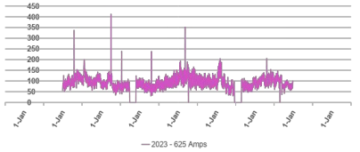
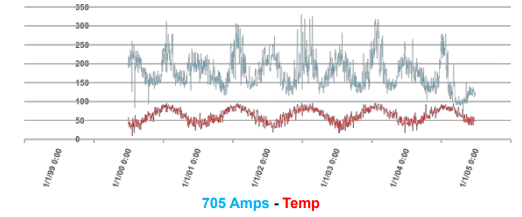

Electrical Engineering Intern
Norwich Public Utilities · Norwich, CT · Summer 2024 & Winter 2024–2025
Summary
I spent two terms as an Electrical Engineering Intern at Norwich Public Utilities (NPU), a municipal utility serving the city of Norwich, CT. I worked primarily with the electric division's engineering team on the 4.8 kV and 13.8 kV distribution system, supporting load analysis, circuit planning studies, equipment testing, and field investigations.
Most of the work involved compiling and analyzing system data to support decisions the staff engineers were making about circuit upgrades, transformer replacements, and load balancing. A smaller portion was hands-on field work: witness tests, transformer acceptance testing, and substation site visits.
Project Highlights
- Multi-year circuit load analytics. Compiled five years of system load data from the SCADA historian across the 4.8 kV and 13.8 kV distribution networks into structured Excel workbooks, then built filterable charts allowing engineers to compare individual circuits, identify seasonal peaks, and analyze behavior across multiple circuits over selected time ranges. Detailed below.
- Temperature-load correlation analysis. Extended the load dataset by joining it with five years of regional weather data to identify temperature-driven load patterns. The resulting overlays revealed clear winter and summer peaks on specific circuits and gave engineers a basis for predicting circuit behavior under forecasted weather. Detailed below.
- Voltage-drop design study. Independently designed two alternative layouts to resolve a residential voltage-drop issue affecting a customer's EV charging, including primary line extensions, a second transformer addition, pole class specifications, and secondary run lengths. Detailed below.
- Transformer acceptance testing. Performed turns-ratio testing on 41 newly acquired pole-top transformers (4.8 kV, 13.8 kV, and dual-voltage units) using a Megger TTRU1-ADV after vendor training. Documented results against tolerance specs on engineering test forms and flagged any units outside tolerance for follow-up.
- Distribution planning support studies. Contributed load data and analysis to multiple planning efforts including fuse coordination, recloser placement, circuit-tie feasibility, and a 13.8 kV upgrade project. Work typically involved pulling per-transformer load data from metering analytics, summing it by phase, and presenting findings to the engineering team for design decisions.
- Transformer load-balancing study. Gathered load data on roughly 85 over- and underloaded distribution transformers, plotted them geographically to identify candidate swap pairs, and surfaced two pairs the team could potentially exchange to rebalance loading on the system without new equipment purchases.
- Field work and witness testing. Participated in solar inverter interconnection witness tests for new customer-side solar installations, transmission right-of-way pole replacement inspections, substation site visits, and field verification of transformer locations identified during the load-balancing study.
- Fault investigation support. Assisted with a breaker-trip investigation by downloading the relay event record, identifying the faulted phase, and walking the affected circuit. The investigation also turned up a discrepancy between the GIS one-line and the as-built field configuration, which the team subsequently corrected.
Featured Work: Multi-Year Load Analytics
The largest single piece of work over the summer was building out a structured load-analysis dataset for NPU's medium-voltage distribution circuits. The engineering team had access to years of SCADA load telemetry but no convenient way to slice it for planning decisions. Pulling the history for a single circuit required manual work each time, and comparing multiple circuits across multi-year windows was effectively impractical.
Working with the other intern and under direction from the staff engineers, we pulled five years of amperage trending data for every distribution breaker across both the 4.8 kV and 13.8 kV systems, consolidated it into two organized workbooks split by voltage class, and built filterable charts on top of the dataset. The result was a tool the engineering team could use to ask questions like "how has this circuit's peak loading changed over the last three years" or "do these two adjacent circuits peak at the same time" without going back to the SCADA system each time.
Temperature correlation
As a follow-on, we extended the dataset by aligning it with five years of regional weather data and producing per-circuit overlay charts of load against ambient temperature. The overlays made the relationship between weather and load visually obvious on circuits with significant heating or cooling load and gave the engineering team a starting point for rough forecasting under expected weather conditions.

Single-circuit load trend across multiple years with seasonal peaks clearly visible

Circuit load (top) vs. ambient temperature (bottom) over a multi-year window
Combined, the two deliverables gave NPU's engineering team a reusable analytics layer over their existing SCADA history, replacing a per-request manual data pull with a filterable dataset they could query against directly.
Featured Work: Voltage-Drop Design Study
A customer on one of NPU's residential streets was experiencing voltage drops severe enough that their EV would not charge reliably from the existing service. The engineering team asked me to investigate the layout and propose redesign options. This was the one project I owned end to end during the internship.
I started by mapping the existing layout: a single 25 kVA transformer feeding twelve customers down roughly 400 ft of secondary run, with peak transformer loading around 27 kW. The voltage drop was a consequence of the long secondary and the loading profile rather than any equipment fault, so adding more transformer capacity at the same location wouldn't help. The issue was distance.
Two redesign options
I worked up two alternative layouts. Both extended the primary line further down the street so a second transformer could be installed mid-run, splitting the secondary load between two service drops instead of one. The two options differed in how the customers were re-split between the existing transformer and the new one, and correspondingly in the length of primary extension required (~200 ft vs. ~250 ft).
For each option I specified the new transformer rating, the customer split, the secondary run length on each side, and the pole heights and classes required for the primary extension. The deliverable was a pair of single-page layout drawings the staff engineer could compare directly and pass forward for the construction decision.


Existing layout (left) and one of two proposed redesigns (right)
Tools and Skills
What I Took Away
- How a real distribution system actually fits together: breakers, reclosers, transformers, voltage regulators, and the difference between what the one-line shows and what's actually in the field. The fault investigation in particular taught me that the documentation and the physical reality don't always match, and verifying that is part of the job.
- How much of practical engineering work is data work. A lot of the "engineering" decisions on circuit upgrades, load balancing, and planning came down to whether someone had pulled the right data and presented it in a way that made the answer obvious. Building those datasets was a real contribution that influenced executive decision making.
- How to scope a small design problem end-to-end (Voltage-Drop Design Study). Identifying the actual constraint (distance, not capacity), generating multiple options instead of one, and presenting them so a senior engineer could compare them quickly.
- How to operate in a field-and-office environment where part of the week is sitting with spreadsheets and part of the week is in a substation or on a pole truck. Both feed each other, the field visits gave context to the data, and the data gave purpose to the field visits.